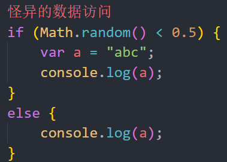
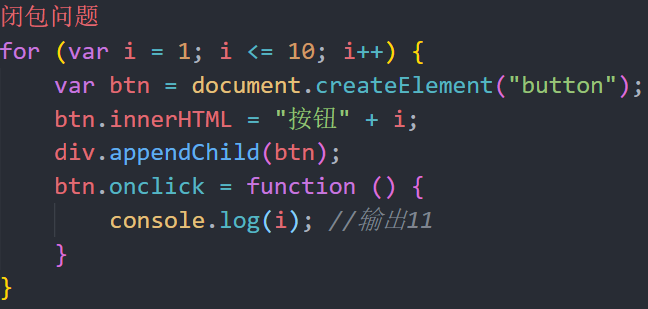
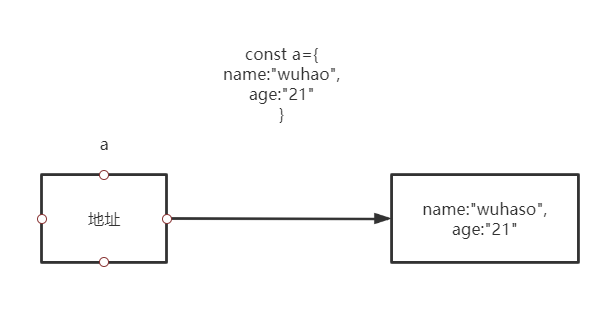

一、var声明变量出现的问题
允许重复的变量声明：导致数据被覆盖
变量提升：怪异的数据访问、闭包问题
- 解决方法：立即执行函数


- 全局变量挂载到全局对象window
全局对象成员污染问题：全局变量都会放到window里面，如果项目的JS文件很多，那么可能存在相同命名的变量
window对象原本的属性被覆盖：window对象内部定义了许多方法，如console，name等，如果变量名定义为console，那么就会将原有的console方法覆盖
二、let
2.1 块级作用域
ES6不仅引入let关键字用于解决变量声明的问题，同时引入了块级作用域的概念(以前只有全局作用域和函数作用域)
块级作用域：代码执行时遇到花括号，会创建一个块级作用域，花括号结束，销毁块级作用域
2.2 let解决ES5声明变量的问题
- 允许重复的变量声明问题：导致数据被覆盖
let声明的变量，不允许当前作用域范围内重复声明
在块级作用域中用let定义的变量，在作用域外不能访问
- 变量提升问题：怪异的数据访问、闭包问题
- 使用let不会有变量提升，因此，不能在定义let变量之前使用它
- 全局变量挂载到全局对象：全局对象成员污染问题
- let声明的变量不会挂载到全局对象
2.3 拓展
底层实现上，let声明的变量实际上也会有提升，但是，提升后会将其放入到“暂时性死区”，如果访问的变量位于暂时性死区，则会报错：“Cannot access ‘a’ before initialization”。当代码运行到该变量的声明语句时，会将其从暂时性死区中移除。
在循环中，用let声明的循环变量，会特殊处理，每次进入循环体，都会开启一个新的作用域，并且将循环变量绑定到该作用域（即每次循环，使用的是一个全新的循环变量）
三、const
3.1 使用const声明变量
const和let完全相同，仅在于用const声明的变量，必须在声明时赋值，而且不可以重新赋值
实际上，在开发中，应该尽量使用const来声明变量，以保证变量的值不会随意篡改，原因如下：
根据经验，开发中的很多变量，都是不会更改，也不应该更改的
后续的很多框架或者是第三方JS库，都要求数据不可变，使用常量可以一定程度上保证这一点
3.2 注意的细节
- 常量不可变，是指声明的常量的内存空间不可变，并不保证内存空间中的地址指向的其他空间不可变
原始值：内容不能改变，因为内存空间装的是原始值本身
引用值：例如：对象 函数等，内存空间装的是地址，只要内存空间地址不变，那么就可以修改引用值本身的值，但是不能给变量重新赋值

- 常量的命名
特殊的常量：该常量从字面意义上，一定是不可变的，比如圆周率、月地距地或其他一些绝不可能变化的配置，通常，该常量的名称全部使用大写，多个单词之间用下划线分割
普通的常量：使用和之前一样的命名即可
- 在for循环中，循环变量不可以使用const，for in循环里面可以用const
- const变量绑定在块级作用域里，每一次循环都是一个新的变量